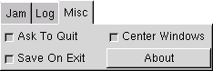

Quitting
WARNING WARNING WARNING WARNING
It is not advised that you quit MindGuard as doing so will leave you vulnerable to psychotronic influences. MindGuard should be left running 24/7 if you know what's good for you!
WARNING WARNING WARNING WARNING
However, if you wish to tease fate and quit, you may do so by:
- Pushing the big, friendly button marked Quit
- Using your window manager to quit in a normal fashion

There are two options related to quitting under the Misc Tab in main window:
- Ask To Quit controls the "Are you sure?" requester before quitting
- Save On Exit controls quit and save feature